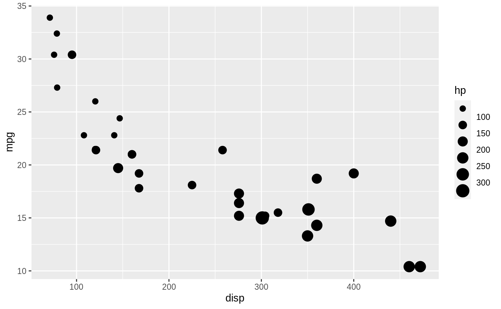
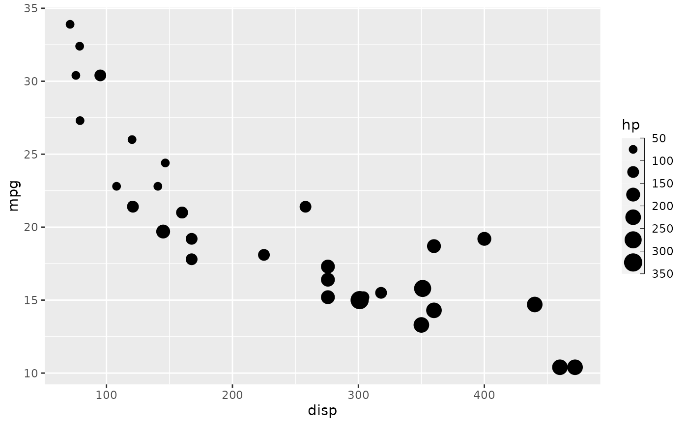
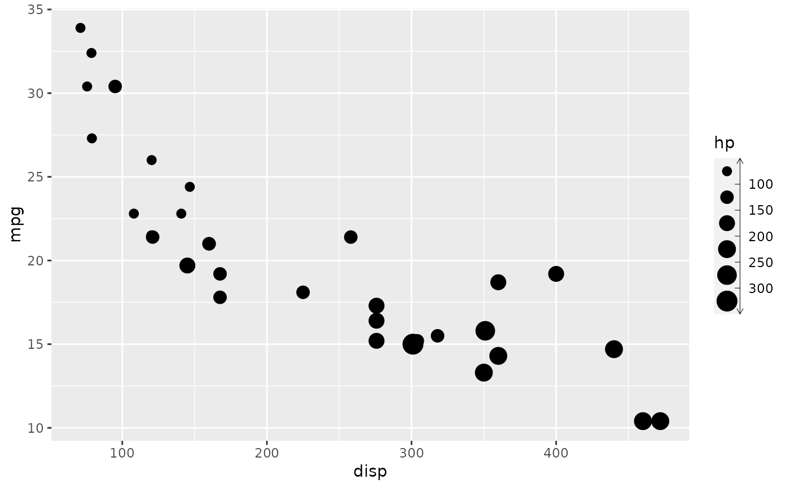
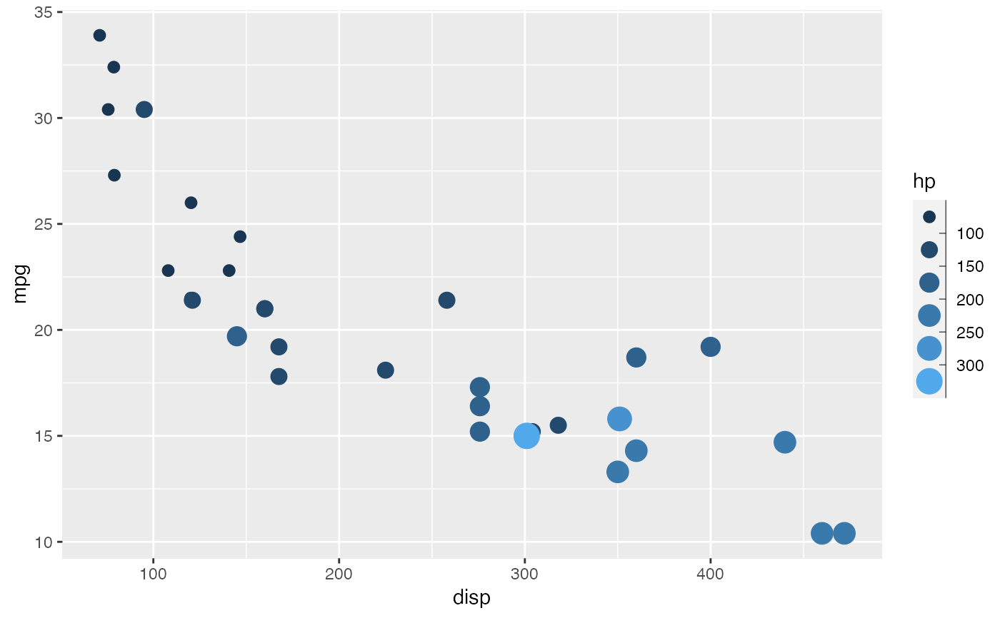

This guide is a version of the guide_legend() guide for binned scales. It
differs in that it places ticks correctly between the keys, and sports a
small axis to better show the binning. Like guide_legend() it can be used
for all non-position aesthetics though colour and fill defaults to
guide_coloursteps(), and it will merge aesthetics together into the same
guide if they are mapped in the same way.
Arguments
- title
A character string or expression indicating a title of guide. If
NULL, the title is not shown. By default (waiver()), the name of the scale object or the name specified inlabs()is used for the title.- theme
A
themeobject to style the guide individually or differently from the plot's theme settings. Thethemeargument in the guide overrides, and is combined with, the plot's theme.- angle
Overrules the theme settings to automatically apply appropriate
hjustandvjustfor angled legend text. Can be a single number representing the text angle in degrees, orNULLto not overrule the settings (default).- position
A character string indicating where the legend should be placed relative to the plot panels.
- direction
A character string indicating the direction of the guide. One of "horizontal" or "vertical".
- override.aes
A list specifying aesthetic parameters of legend key. See details and examples.
- reverse
logical. If
TRUEthe order of legends is reversed.- order
positive integer less than 99 that specifies the order of this guide among multiple guides. This controls the order in which multiple guides are displayed, not the contents of the guide itself. If 0 (default), the order is determined by a secret algorithm.
- show.limits
Logical. Should the limits of the scale be shown with labels and ticks. Default is
NULLmeaning it will take the value from the scale. This argument is ignored iflabelsis given as a vector of values. If one or both of the limits is also given inbreaksit will be shown irrespective of the value ofshow.limits.- ...
ignored.
Use with discrete scale
This guide is intended to show binned data and work together with ggplot2's
binning scales. However, it is sometimes desirable to perform the binning in
a separate step, either as part of a stat (e.g. stat_contour_filled()) or
prior to the visualisation. If you want to use this guide for discrete data
the levels must follow the naming scheme implemented by base::cut(). This
means that a bin must be encoded as "(<lower>, <upper>]" with <lower>
giving the lower bound of the bin and <upper> giving the upper bound
("[<lower>, <upper>)" is also accepted). If you use base::cut() to
perform the binning everything should work as expected, if not, some recoding
may be needed.
See also
Other guides:
guide_colourbar(),
guide_coloursteps(),
guide_legend(),
guides()
Examples
p <- ggplot(mtcars) +
geom_point(aes(disp, mpg, size = hp)) +
scale_size_binned()
# Standard look
p
# Remove the axis or style it
p + guides(size = guide_bins(
theme = theme(legend.axis.line = element_blank())
))

p + guides(size = guide_bins(show.limits = TRUE))

my_arrow <- arrow(length = unit(1.5, "mm"), ends = "both")
p + guides(size = guide_bins(
theme = theme(legend.axis.line = element_line(arrow = my_arrow))
))

# Guides are merged together if possible
ggplot(mtcars) +
geom_point(aes(disp, mpg, size = hp, colour = hp)) +
scale_size_binned() +
scale_colour_binned(guide = "bins")
